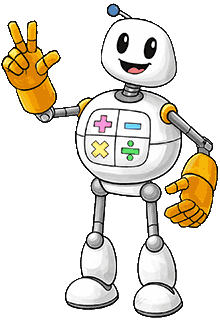

How It Works
Hover over a step to learn more
Profile Setup
Get started in under 60 seconds.
Ability Check
Identifying current skill levels.
Individual Path
Custom curriculum generation.
Daily Exercise
Engaging bite-sized exercises.
Progress Diagnostic
Progress & obstacles are identified
Path Adaption
Taking the optimal path
Mastery
Proficiency and grades improves
Everything your child needs to thrive
The optimal learning zone
Adaptive exercise difficulty ("Modulated difficulty" in educational science) is a proven learning concept in which challenges grow with your child, keeping them in the optimal learning zone.
Bi-lingual learner support
Not just children from bi-lingual families, but also kids with speech, hearing and comprehension difficulties profit from foundational practice involving playful read-aloud (voice-driven) exercises that improve pronunciation and listening. If a word isn't understood, help is right there. Clear explanations also aid understanding.
Child-friendly on-screen keyboard and numeric pad
Keyboard layout can be confusing to children. Hence, when needed in an exercise easy-to-use keyboards with linear alphabetical layout and reduced clutter can be used directly with mouse or touchpad.
LSR and Dyslexia friendly typefaces
Children with reading difficulties benefit from optionally activated typefaces and text-size settings, boosting comprehension in German and Math exercises*

Learning path options
Parents influence how learning progresses. Several options can be selected. Smart Practice focuses primarily on weak topics, while other options such as Deep Practice tackle a particular topic and Broad Learning focuses on a wider area of practice topics in one or several subjects.*
Just-right gamification without addictive game mechanics
Dark patterns and intrinsically addictive mechanics are avoided. Parents can also decide the level of gamification (rewards, educational mini-games).
German Curriculum Aligned
Exercises are mapped to the basic German primary school curriculum (Rahmenlehrplan) with additional exercise options that aid to fix foundational gaps.
GDPR Compliant
EU Servers
Inclusive
Diverse Needs
Pronunciation Tools
Aiding language learning
Use-cases from parents
See how Smartmeister adapts to different family needs
Miriam
Munich
The "Fast Learner" Trap
"Lara is bored in school. She needs practice aligned to her speed, including more complex exercises."
Fatima & Ilias
Berlin
Language Gaps
"Our son struggled with German terms. The translation tools help him build vocabulary and better understand what is asked in exercises."
James & Sophia
Hannover
Fear of Judgement
"She has a hard time with people (and Math). Many teachers make her nervous, criticism even more so. Tutors are just not an option for us right now."
Stefanie
Hamburg
Anxiety Hurdle
"Traditional tests freeze my daughter up. It's essential that she does fun exercises at her own pace. She simply cannot cope with pressure yet."
Thomas & Rebecca
Cologne
Personalisation
"Our twins are opposites. Two totally different learning paths do the job, with more hands-off time for us."
Claudia
Leipzig
Speech & Pronunciation
"My son needed regular pronunciation and reading practice. I cannot do one-on-one sessions with him regularly due to my work hours."
Marcus
Frankfurt/Main
Misconceptions
"Sophia gets good marks, but she memorises rather than understands. Word problems trip her up. It looks like plenty of misconceptions. Don't know where to start."
How we compare
The definitive choice for personalized learning
| Features / Benefits |
SM
Smartmeister
|
Gemini/ChatGPT Study Mode |
General LLM |
YouTube Videos |
Other e-learning apps |
|---|---|---|---|---|---|
| Exercises never too easy, too hard | check_circle | warning | sentiment_sad | sentiment_sad | sentiment_sad |
| Learning path adapts to gaps/goals* | check_circle | warning | warning | sentiment_sad | warning |
| Teaching best practice methods | check_circle | warning | sentiment_sad | warning | check_circle |
| Many types of practice formats | check_circle | sentiment_sad | sentiment_sad | sentiment_sad | check_circle |
| Visually engaging lessons | check_circle | sentiment_sad | sentiment_sad | warning | check_circle |
| Diversely interactive exercises | check_circle | sentiment_sad | sentiment_sad | sentiment_sad | check_circle |
| Curriculum aligned | check_circle | warning | sentiment_sad | warning | check_circle |
| Additional support tools | check_circle | sentiment_sad | sentiment_sad | sentiment_sad | warning |
| Read-Aloud Voice (incl. slow-mode) | check_circle | warning | sentiment_sad | sentiment_sad | warning |
| Granular Progress diagnostics | check_circle | sentiment_sad | sentiment_sad | sentiment_sad | warning |
| Cognitive Profiling* | check_circle | sentiment_sad | sentiment_sad | sentiment_sad | sentiment_sad |
| Child-friendly language | check_circle | warning | sentiment_sad | warning | check_circle |
| Struggle Helper Mascot* | check_circle | sentiment_sad | sentiment_sad | sentiment_sad | warning |
| Reduced Gamification | check_circle | check_circle | check_circle | sentiment_sad | sentiment_sad |
| Privacy & Security (DSGVO) | check_circle | sentiment_sad | sentiment_sad | warning | check_circle |
Frequently Asked Questions
What subjects does Smartmeister cover?
Is the curriculum aligned with school standards?
How long should a child use it daily?
How safe is my child's data?
How do you use AI
Is is it less time consuming than primary school tutoring?
Can parents manage multiple children in one account?
How does the waitlist work?
How is this different from other learning apps?
Both founders of Smartmeister are also parents in bilingual families (German + other language). To that end the challenges of these children are taken at heart, because learning German curriculum subjects (in conjunction to plenty of special-use & educational explanation vocabulary) with lesser German proficiency is simply more challenging, whether that kid is a prodigy or a slow-paced moon-shot. As we discovered on our way, it is also native speaking German children struggling with task comprehension. For this exact reason Smartmeister provides smart tools that enable these children to learn without obstacles, boosting comprehension and learning performance.
Why adaptive learning often works better than Math or German tutoring
For subjects like maths a simple gap can quietly sabotage everything built on top of it. That is why subject- or topic-mapped insights and exercise difficulty adjustment matter. A tutor in two weekly sessions may spot that a child is struggling, but detecting the full picture of underlying gaps, and how they connect to foundational knowledge, is genuinely hard when session time is so limited.
The same applies to German language tutoring and comprehension: a child who doesn't understand the words "Unterschied" or "Begrenzung" in a maths isn't failing at maths. They're failing at vocabulary. The tutor might catch that specific issue in a session. Yet, identifying it as part of a broader pattern of language-driven confusion, and systematically addressing it, requires the kind of daily visibility that weekly tutoring simply cannot provide often. Adaptive learning works across every session, adjusting focus to where a child most needs it — consistently, and at whatever time of day actually works for the family.